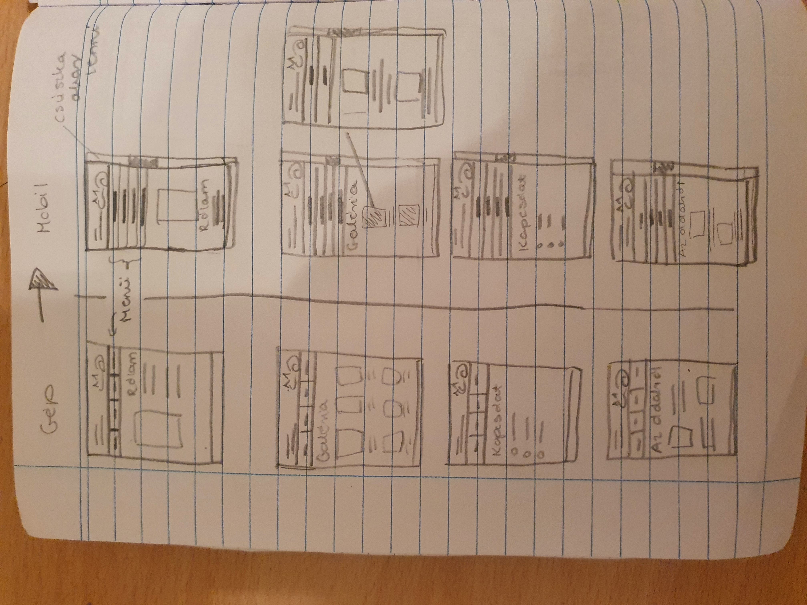
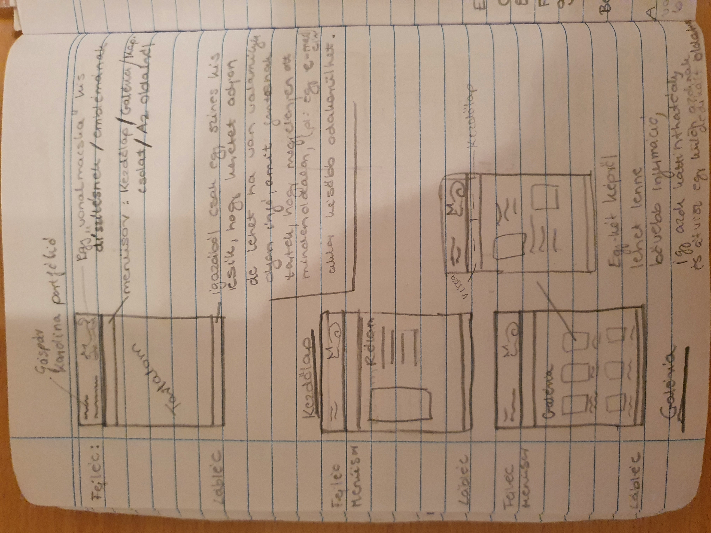

Dokumentáció
Még a félév elején készítettem egy előtervezetet, aminek szerintem struktúra szempontjából megfelel az oldal, főleg a színek azok, amelyekkel variáltam. Mindenképpen szerettem volna, ha lenne legalább egy aloldal a fő menüpontok egyikén belül, ez végül a "MACSKÁS KÉPEK" formájában valósult meg. Azonban ezt el akartam különíteni a navigációs sávtól, ami kicsit nehezebb volt, mert a szegélyek nem akartak összeolvadni. A legnehezebb feladat számomra az volt, hogy az oldal tetején megjelenő fehér sávot eltüntessem. Szinte mindenhol nullára raktam a szegélyt, keretet, térközt, de azért sem akart eltűnni. Ezt első körben úgy oldottam meg, hogy a body színét olyanra állítottam, mint a header, így kvázi eltűnt a csík, de éreztem, hogy azért ez mégsem a legjobb megoldás. Ezt követően volt egy kis kihagyás az oldal szerkeztésében, így amikor újra leültem csinálni, inkább elölről kezdtem az egészet (vagyis csak a css fájt). Második nekifutásra sikerült megoldani a fehér csík problémáját, és a flex használatát is sikerült jobban elsajátítanom, így a végére már egészen kezdtem élvezni a folyamatot. Aztán jött a képek berakása, amikor is megkérdőjeleztem az újonnan szerzett tudásom, mert csak azért sem akartak egymás alá ugrani a képek.Egy kis bénázás, és pár tutorial videó után, végül azért mégis összejött a honlap.